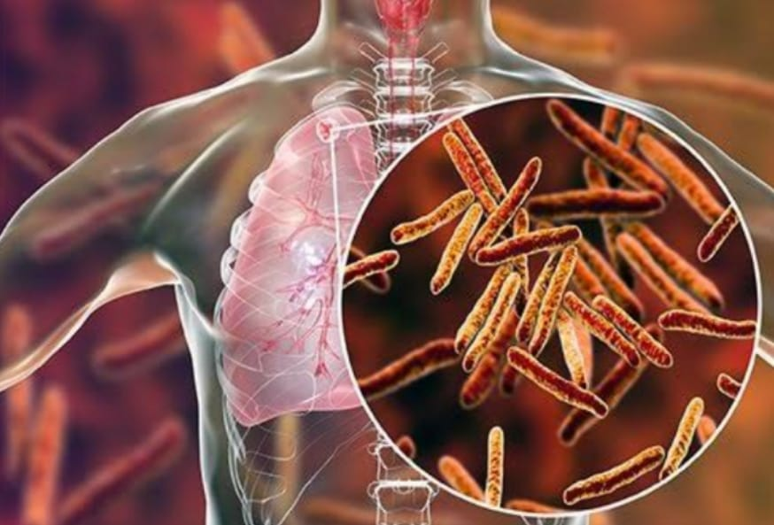

Tuberculosis
A potentially serious infectious bacterial disease that mainly affects the lungs.
The bacteria that cause TB are spread when an infected person coughs or sneezes.

Symptoms of Tuberculosis
Pain areas: in the chest
Pain circumstances: can occur while breathing
Cough: can be chronic or with blood
Whole body: fatigue, fever, loss of appetite, malaise, night sweats, or sweating
Also common: loss of muscle, phlegm, severe unintentional weight loss, shortness of breath, or swollen lymph nodes
Medicine for Tuberculosis
The most common treatment for active TB is isoniazid INH in combination with three other medicines-rifampin, pyrazinamide and ethambutol
★The risk of infection can be reduced by using a few simple precautions: good ventilation: as TB can remain suspended in the air for several hours with no ventilation. natural light: UV light kills off TB bacteria. good hygiene: covering the mouth and nose when coughing or sneezing reduces the spread of TB bacteria.★